This document is provided as supplementary information for the manuscript ‘Iridescence untwined: Honey bees can separate hue variations in space and time’.
In our study, we demonstrate the relevance of separately considering the temporal and spatial components of iridescence by showing that our model species, honey bees, can separately attend to one property (temporal) whilst ignoring the other (spatial). Here we include analysis of the spectral curves form our stimulus, visual models and statistical tests for the results of behavioural experiments.
All code is written in the R programming language unless specifically stated otherwise.
library(pavo) # Spectral curves processing and color models
library(dplyr) # Data wrangling
library(tidyr) # Data wrangling
library(lme4) # For fitting models
library(DHARMa) # For model assumptions
library(ggplot2) # For plotting
library(shiny)
install.packages("shiny")# Spectral data - raw
## Iridescent stimulus
IriDataRaw <- read.csv(
"../Data/1.IridescentDisc_RawSpectralData.csv", header=TRUE)
IriData <- as.rspec(IriDataRaw[IriDataRaw$wl <= 700, ])
IriData <- procspec(IriData, fixneg = "zero")
## Backgrounds
BkgDataRaw <- read.csv(
"../Data/2.GreyBackgrounds_RawSpectralData.csv",header=TRUE)
BkgData <- as.rspec(BkgDataRaw[BkgDataRaw$wl <= 700 & BkgDataRaw$wl >= 300, ])
BkgData <- procspec(BkgData, fixneg = "zero")
## Distractors
DisDataRaw <- read.csv(
"../Data/3.Distractors_RawSpectralData.csv",header=TRUE)
DisData <- as.rspec(DisDataRaw[DisDataRaw$wl <= 700 & DisDataRaw$wl >= 300,])
DisData <- procspec(DisData, fixneg = "zero")
DisData <- procspec(DisData, opt = "smooth", span = 0.05)
## Blue Stimulus
BlueDataRaw <- read.csv(
"../Data/4.BlueStimulus_RawSpectralData.csv")
BlueData <- as.rspec(BlueDataRaw[BlueDataRaw$wl <= 701 & BlueDataRaw$wl >= 300,])
BlueData <- procspec(BlueData, fixneg = "zero")
# Data for training phase (choices 1-60)
B_CHOICE <- read.csv("../Data/5.BeeChoices_TrainingPhase.csv")
# Data for unrewarded tests
B_TEST <- read.csv("../Data/6.BeeChoices_TestingPhase.csv")
# Iridescence Point Illumination
IriPoint <- read.csv("../Data/7.IridescentDiscPointIllumination.csv")Spectral characterization of the iridescent stimulus
# Blue shift calculations
## First create a data frame with the spectral location for each spectrum
ps <- peakshape(IriData) # obtain spectral descriptorsThis step is convenient to save time and computational power while re-using the parameters extracted from the function peakshape without generating the plots each time.
SpecLoc <- ps$H1 - ps$HWHM.l # obtain spectral location
labels <- names(IriData) # Names of each column
Position_light <- substring(labels [ 2: length(labels)], 1, 3) # Light source
Angle_collector <- substring(labels [ 2: length(labels)], 5, 6) # Collector
Spectral <- data.frame(
"Position" = Position_light,
"Angle" = as.numeric(Angle_collector),
"SpecLoc" = as.numeric(SpecLoc)
) # Data frame with the spectral location
#Note: In this paper we used a linear model to quantify iridescence
#The slope of the linear model is the shifting of the spectra
## Use a loop to find the slope for each position of the light source
Iridescence <- rep(1,15) # initial empty vector
Position1to15 <- c("P01","P02","P03","P04","P05", "P06",
"P07","P08","P09","P10","P11", "P12",
"P13","P14","P15") # positions of the light source
j <- 1 # Accumulator to allow consecutive iterations in the loop
for (i in Position1to15) {
mod <- lm(Spectral$SpecLoc [Spectral$Position == i]~
Spectral$Angle [Spectral$Position == i]) # model each position
Iridescence [j] <- round(as.numeric(summary(mod)$coefficients[2]), 3) # slope
j <- j + 1 # repeat for each position
}
## Create a dataframe with the absolute magnitude of the slope (blue shift)
BlueShiftData<-data.frame(
"Position" = Position1to15,
"BlueShift" = Iridescence * (-1)
)
## Obtain statistics
summary(BlueShiftData$BlueShift) ## Min. 1st Qu. Median Mean 3rd Qu. Max.
## 0.810 9.932 12.342 11.248 13.715 15.239sd(BlueShiftData$BlueShift)## [1] 3.950022Visualization of the blue shift in the iridescent stimulus
# Example with the light in position 9.
ForP09 <-
IriData %>%
select (wl, contains ("P09")) %>%
gather (Pos, Reflectance, - wl) %>%
mutate (Angle = substr(Pos,5,6))
ggplot (ForP09, aes(wl, Reflectance)) +
geom_line(aes(color=Angle), size=0.8) +
theme_bw() +
theme(panel.grid.major = element_blank(),
panel.grid.minor = element_blank())+
theme(legend.title=element_blank())+
theme(legend.position = c(.99, .99),
legend.justification = c("right", "top"))+
ylab("Reflectance (%)")+
xlab("Wavelength (nm)")+
scale_color_grey(start = 0, end = 0.75) +
theme(legend.text = element_text(size=7))+
theme(legend.text = element_text(size=7))+
theme(legend.key=element_blank())+
theme(legend.key.height = unit(0.4, 'cm'),
legend.key.width= unit(0.4, 'cm'))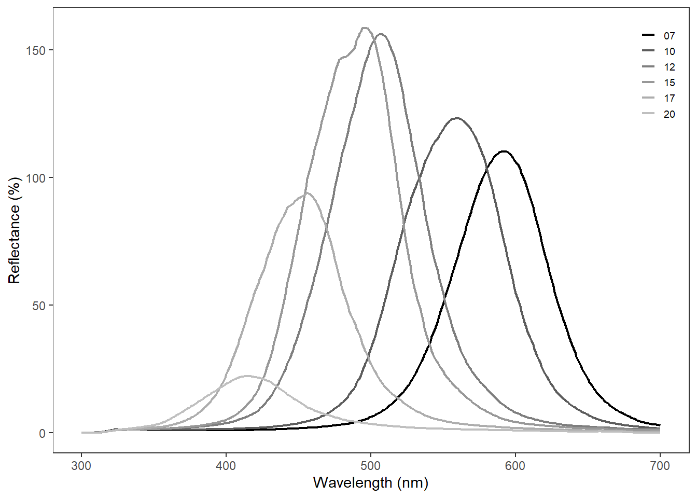
# Iridescent stimulus
# Example with the light in position 9.
## Create the visual models:
bee_modelc <- vismodel((IriData [,c(1,40:45)]), # consider only position 9
visual = "apis", achromatic = "l",
illum = "D65", qcatch = "Ei",
bkg = BkgData$GB1_10, # grey background
vonkries = T, relative = F)
## visualize in hex space:
hex_spacec = colspace(bee_modelc, space = "hexagon") # create the hex space
colours1 <- spec2rgb(IriData [,c(1,40:45)]) # Human RGB values
plot(hex_spacec,col = colours1, cex = 1.5) # plot the hex space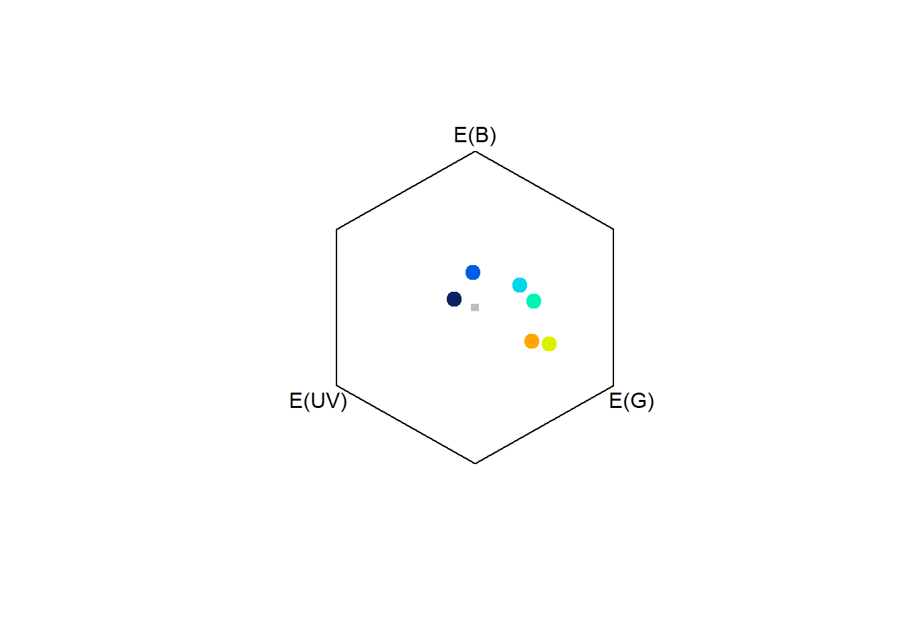
# Note: We used human RGB values only for visualization purposes
# But these values are not related to the bee perception of colour# Colourful distractors
# Example modelling distractors 9 and 10
## Create the visual models:
bee_ddc <- vismodel(DisData[,c(1,28:35)], # only distractors 9 and 10
visual = "apis", achromatic="l",
illum = "D65", qcatch = "Ei",
bkg = BkgData$GB1_10, # grey background
vonkries = T, relative = F)
## visualize in hex space:
hsddc <- colspace(bee_ddc, space = "hexagon") # create the hex space
colours2 <- spec2rgb(DisData[,c(1,28:35)]) # Human RGB values
plot(hsddc,col= colours2, cex = 1.5) # plot the hex space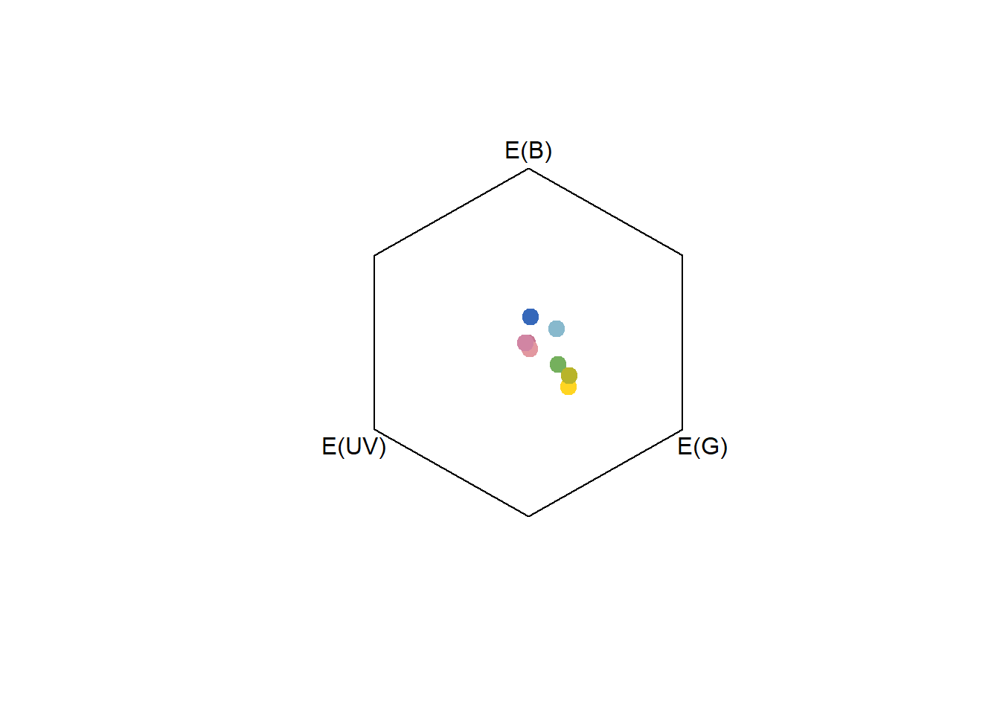
# Note: We used human RGB values only for visualization purposes
# Each colour represents a patch in the colorful distractor
# But these values are not related to the bee perception of colourSpatial acuity was simulated using the toBeeView program using the following code structure:
toBeeView -i Filename.png -d 50 -h 50 -r 1.9 -p 1.8Here, the simulation is set to a viewing distance (d) of 50 mm and a height (h) of 50 mm. To generate simulations at 10 cm and 20 cm, we changed ‘d’ to 100 and 200.
# Generalized linear model for the training phase
lm1 <- glm(CHOICE~CHOICENUM, family = binomial, data = B_CHOICE)
summary(lm1)##
## Call:
## glm(formula = CHOICE ~ CHOICENUM, family = binomial, data = B_CHOICE)
##
## Deviance Residuals:
## Min 1Q Median 3Q Max
## -1.6944 -1.4062 0.8012 0.8970 1.0097
##
## Coefficients:
## Estimate Std. Error z value Pr(>|z|)
## (Intercept) 0.395297 0.173497 2.278 0.0227 *
## CHOICENUM 0.012807 0.005134 2.495 0.0126 *
## ---
## Signif. codes: 0 '***' 0.001 '**' 0.01 '*' 0.05 '.' 0.1 ' ' 1
##
## (Dispersion parameter for binomial family taken to be 1)
##
## Null deviance: 747.65 on 599 degrees of freedom
## Residual deviance: 741.36 on 598 degrees of freedom
## AIC: 745.36
##
## Number of Fisher Scoring iterations: 4# Generate values for Fig. 5: Predicted mean proportion of correct choices
# Create dataframe from 0 to 60
choicenumlm <- data.frame (CHOICENUM = seq(0,60, length.out = 100))
# Create matrix of choice number
Xgc1 <- model.matrix(~CHOICENUM, data = B_CHOICE)
#Create vector of model coefficients
coeff <- c(0.39529652, 0.01280739)
# Calculate predicted mean proportion of correct choices
eta <- Xgc1 %*% coeff
# Calculate standard errors
SE <- sqrt(diag(Xgc1 %*% vcov(lm1) %*% t(Xgc1)))
#creates datafile with data from irid.dat (after reversing the link function)
write.csv(cbind(choicenumlm$CHOICENUM, eta, SE), "iridreg.csv") Setting up subsets:
# Generalized linear mixed model for unrewarded test conditions
B_TEST$BEEID <- as.factor(B_TEST$BEEID) #Treat Bee ID as factor
B_LEARN <- subset(B_TEST, TEST == "LEARNING") # Subset Learning test
B_TRANS <- subset(B_TEST, TEST == "TRANSFER") # Subset Transfer test
B_CONT <- subset(B_TEST, TEST == "CONTROL") # Subset Control test
B_CONF <- subset(B_TEST, TEST == "BLUE") # Subset Conflict test # Learning test model
lm_LEARN <- glmer(CHOICE~ 1 + (1|BEEID), family = binomial, data = B_LEARN)
summary(lm_LEARN) ## Generalized linear mixed model fit by maximum likelihood (Laplace
## Approximation) [glmerMod]
## Family: binomial ( logit )
## Formula: CHOICE ~ 1 + (1 | BEEID)
## Data: B_LEARN
##
## AIC BIC logLik deviance df.resid
## 104.1 109.3 -50.0 100.1 98
##
## Scaled residuals:
## Min 1Q Median 3Q Max
## -2.0 0.5 0.5 0.5 0.5
##
## Random effects:
## Groups Name Variance Std.Dev.
## BEEID (Intercept) 0 0
## Number of obs: 100, groups: BEEID, 10
##
## Fixed effects:
## Estimate Std. Error z value Pr(>|z|)
## (Intercept) 1.386 0.250 5.545 2.94e-08 ***
## ---
## Signif. codes: 0 '***' 0.001 '**' 0.01 '*' 0.05 '.' 0.1 ' ' 1
## optimizer (Nelder_Mead) convergence code: 0 (OK)
## boundary (singular) fit: see ?isSingular(exp(1.386))/(1 + exp( 1.386)) # Mean proportion of correct choices## [1] 0.7999529confint(lm_LEARN) # Calculate confidence intervals## 2.5 % 97.5 %
## .sig01 0.0000000 1.028480
## (Intercept) 0.9167736 2.010104(exp(0.9167736))/(1 + exp(0.9167736)) # Lower bound## [1] 0.7143842(exp(2.010104))/(1 + exp(2.010104)) # Upper bound## [1] 0.8818539# Transfer test model
lm_TRANS <- glmer(CHOICE~ 1 + (1|BEEID), family = binomial, data = B_TRANS)
summary(lm_TRANS) ## Generalized linear mixed model fit by maximum likelihood (Laplace
## Approximation) [glmerMod]
## Family: binomial ( logit )
## Formula: CHOICE ~ 1 + (1 | BEEID)
## Data: B_TRANS
##
## AIC BIC logLik deviance df.resid
## 91.9 97.1 -44.0 87.9 98
##
## Scaled residuals:
## Min 1Q Median 3Q Max
## -2.2913 0.4364 0.4364 0.4364 0.4364
##
## Random effects:
## Groups Name Variance Std.Dev.
## BEEID (Intercept) 0 0
## Number of obs: 100, groups: BEEID, 10
##
## Fixed effects:
## Estimate Std. Error z value Pr(>|z|)
## (Intercept) 1.6582 0.2728 6.079 1.21e-09 ***
## ---
## Signif. codes: 0 '***' 0.001 '**' 0.01 '*' 0.05 '.' 0.1 ' ' 1
## optimizer (Nelder_Mead) convergence code: 0 (OK)
## boundary (singular) fit: see ?isSingular(exp(1.6582))/(1 + exp( 1.6582)) # Mean proportion of correct choices## [1] 0.8399962confint(lm_TRANS) # Calculate confidence intervals## 2.5 % 97.5 %
## .sig01 0.000000 0.8065494
## (Intercept) 1.152512 2.2352976(exp(1.152512))/(1 + exp(1.152512)) # Lower bound## [1] 0.7599694(exp(2.2352976))/(1 + exp(2.2352976)) # Upper bound## [1] 0.9033748# Control test model
lm_CONT <- glmer(CHOICE~ 1 + (1|BEEID), family = binomial, data = B_CONT)
summary(lm_CONT) ## Generalized linear mixed model fit by maximum likelihood (Laplace
## Approximation) [glmerMod]
## Family: binomial ( logit )
## Formula: CHOICE ~ 1 + (1 | BEEID)
## Data: B_CONT
##
## AIC BIC logLik deviance df.resid
## 122.6 127.8 -59.3 118.6 98
##
## Scaled residuals:
## Min 1Q Median 3Q Max
## -1.6036 -1.6036 0.6236 0.6236 0.6236
##
## Random effects:
## Groups Name Variance Std.Dev.
## BEEID (Intercept) 0 0
## Number of obs: 100, groups: BEEID, 10
##
## Fixed effects:
## Estimate Std. Error z value Pr(>|z|)
## (Intercept) 0.9445 0.2227 4.241 2.23e-05 ***
## ---
## Signif. codes: 0 '***' 0.001 '**' 0.01 '*' 0.05 '.' 0.1 ' ' 1
## optimizer (Nelder_Mead) convergence code: 0 (OK)
## boundary (singular) fit: see ?isSingular(exp(0.9445))/(1 + exp(0.9445)) # Mean proportion of correct choices## [1] 0.7200077confint(lm_CONT) # Calculate confidence interval## 2.5 % 97.5 %
## .sig01 0.000000 0.8969593
## (Intercept) 0.514904 1.4611194(exp(0.514904))/(1 + exp(0.514904)) # Lower bound## [1] 0.6259554(exp(1.4611194))/(1 + exp(1.4611194)) # Upper bound## [1] 0.8117038# Blue test model
lm_CONF <- glmer(CHOICE~ 1 + (1|BEEID), family = binomial, data = B_CONF)
summary(lm_CONF) ## Generalized linear mixed model fit by maximum likelihood (Laplace
## Approximation) [glmerMod]
## Family: binomial ( logit )
## Formula: CHOICE ~ 1 + (1 | BEEID)
## Data: B_CONF
##
## AIC BIC logLik deviance df.resid
## 130.8 136.0 -63.4 126.8 98
##
## Scaled residuals:
## Min 1Q Median 3Q Max
## -1.4249 -1.4249 0.7018 0.7018 0.7018
##
## Random effects:
## Groups Name Variance Std.Dev.
## BEEID (Intercept) 0 0
## Number of obs: 100, groups: BEEID, 10
##
## Fixed effects:
## Estimate Std. Error z value Pr(>|z|)
## (Intercept) 0.7082 0.2127 3.33 0.000869 ***
## ---
## Signif. codes: 0 '***' 0.001 '**' 0.01 '*' 0.05 '.' 0.1 ' ' 1
## optimizer (Nelder_Mead) convergence code: 0 (OK)
## boundary (singular) fit: see ?isSingular(exp(0.7082))/(1 + exp(0.7082)) # Mean proportion of correct choices## [1] 0.6700033confint(lm_CONF) # Calculate confidence interval## 2.5 % 97.5 %
## .sig01 0.0000000 0.8692417
## (Intercept) 0.2871733 1.1953020(exp(0.2871733))/(1 + exp(0.2871733)) # Lower bound## [1] 0.571304(exp(1.1953020))/(1 + exp(1.1953020)) # Upper bound## [1] 0.767688# Requires package DHaRMa
simulationOutput_lm1 <- simulateResiduals(fittedModel = lm1, plot = T)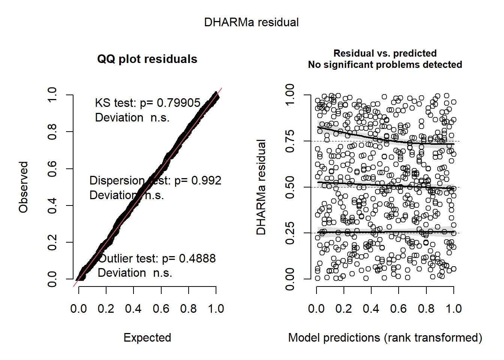
simulationOutput_LEARN <- simulateResiduals(fittedModel = lm_LEARN, plot = T)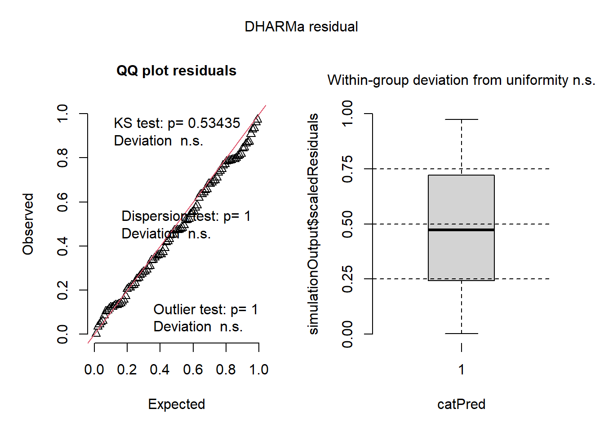
simulationOutput_TRANS <- simulateResiduals(fittedModel = lm_TRANS, plot = T)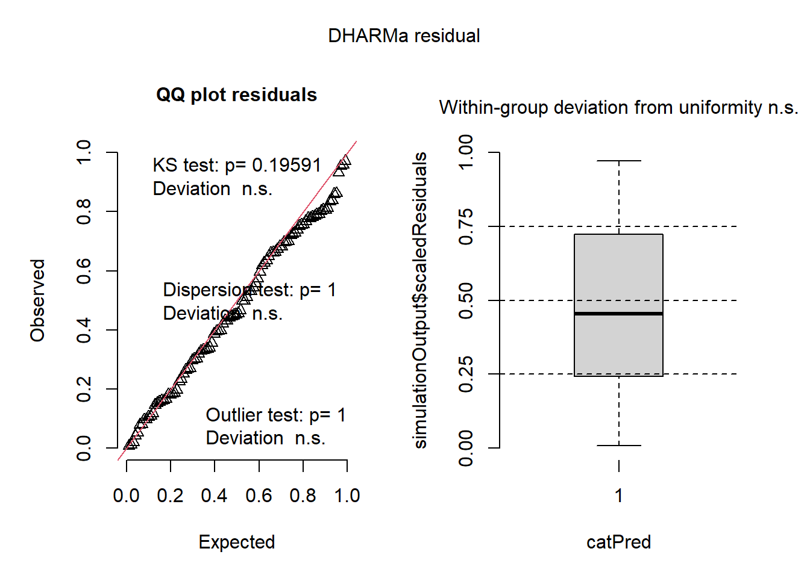
simulationOutput_CONT <- simulateResiduals(fittedModel = lm_CONT, plot = T)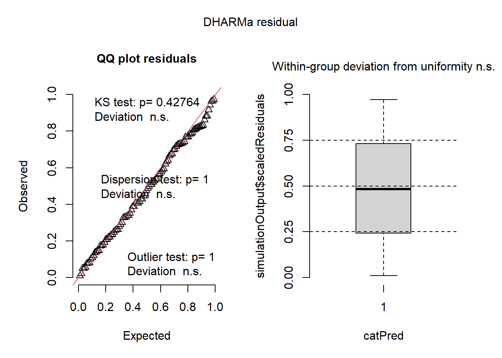
simulationOutput_CONF <- simulateResiduals(fittedModel = lm_CONF, plot = T)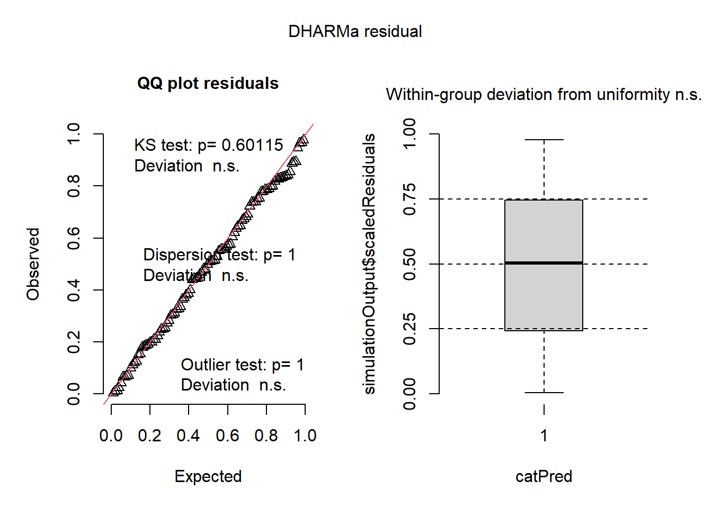
Figure 5 was generated using Gnuplot using the ‘Irid.dat’ file and the following code:
reset
unset multiplot
set terminal pdfcairo size 14cm,14cm enhanced
set terminal pdfcairo font "Helvetica,11"
set output 'iridgraph.pdf' #OUTPUT FILE
set style fill transparent solid 0.4
set style line 1 pt 7 ps 0.15 lw 1.5 lc rgb "black"
set style line 2 lc rgb "magenta" #medium
set style line 3 lc rgb "blue" #low
set style line 4 lc rgb "red" #high
set key bottom right noautotitle
set xlabel "Choice number"
set ylabel "Mean proportion of correct choices"
set yrange [0:1]
set xrange [0:60]
set ytics 0,0.1,1
plot 'irid.dat' i 0 u 1:2:4 w filledc ls 3, \
"" i 0 u 1:3 w l ls 1, "" i 1 u 2:1:3 with
yerrorbars lc rgb("black") ps 0.3 linewidth 1
unset output
set terminal wxt
replotSupplementary Fig. S4
Check the interactive plot below to see the results for each position of the light.
# -------- position1 ----
### Visualize raw spectra
FigS4_p1Raw<-plot(IriData[,c(1, 2:5)],type = "s",labels.stack =
c("20","15","12","10"),cex = 0.7)### Create visual model
pos_1 <- vismodel(IriData[,c(1, 2:5)], visual = "apis",
achromatic = "l", illum = "D65",
qcatch = "Ei", bkg = BkgData$GB1_10,
vonkries = T, relative = F)
### visualize in hex space
hxpos1 <- colspace(pos_1, space = "hexagon")
FigS4_p1Vis<-plot(hxpos1)# -------- position2 ----
### Visualize raw spectra
FigS4_p2Raw<-plot(IriData[,c(1, 6:11)],type = "s",labels.stack =
c("20","17","15","12","10","7"),cex = 0.7)### Create visual model
pos_2 <- vismodel(IriData[,c(1,6:11)], visual = "apis",
achromatic = "l", illum = "D65",
qcatch = "Ei", bkg = BkgData$GB1_10,
vonkries = T, relative = F)
### visualize in hex space
hxpos2 <- colspace(pos_2, space = "hexagon")
FigS4_p2Vis<-plot(hxpos2)# -------- position3 ----
### Visualize raw spectra
FigS4_p3Raw<-plot(IriData[,c(1, 12:16)],type = "s",labels.stack =
c("20","15","12","10","7"),cex = 0.7)### Create visual model
pos_3 <- vismodel(IriData[,c(1, 12:16)],
visual = "apis", achromatic = "l",
illum = "D65", qcatch = "Ei",
bkg = BkgData$GB1_10, vonkries = T, relative = F)
### visualize in hex space
hxpos3 <- colspace(pos_3, space = "hexagon")
FigS4_p3Vis<-plot(hxpos3)# -------- position4 ----
### Visualize raw spectra
FigS4_p4Raw<-plot(IriData[,c(1, 17:21)],type = "s",labels.stack =
c("20","15","12","10","7"),cex = 0.7)### Create visual model
pos_4 <- vismodel(IriData[,c(1, 17:21)],
visual = "apis", achromatic = "l",
illum = "D65", qcatch = "Ei",
bkg = BkgData$GB1_10, vonkries = T, relative = F)
### visualize in hex space
hxpos4 <- colspace(pos_4, space = "hexagon")
FigS4_p4Vis<-plot(hxpos4)# -------- position5 ----
### Visualize raw spectra
FigS4_p5Raw<-plot(IriData[,c(1,22:24)],type = "s",labels.stack =
c("10","7","5"),cex = 0.7)### Create visual model
pos_5 <- vismodel(IriData[,c(1,22:24)],
visual = "apis", achromatic = "l",
illum = "D65", qcatch = "Ei",
bkg = BkgData$GB1_10, vonkries = T, relative = F)
### visualize in hex space
hxpos5 <- colspace(pos_5, space = "hexagon")
FigS4_p5Vis<-plot(hxpos5)# -------- position6 ----
### Visualize raw spectra
FigS4_p6Raw<-plot(IriData[,c(1, 25:29)],type = "s",labels.stack =
c("20","17","15","12","10"),cex = 0.7)### Create visual model
pos_6 <- vismodel(IriData[,c(1, 25:29)],
visual = "apis", achromatic = "l",
illum = "D65", qcatch = "Ei",
bkg = BkgData$GB1_10, vonkries = T, relative = F)
### visualize in hex space
hxpos6 <- colspace(pos_6, space = "hexagon")
FigS4_p6Vis<-plot(hxpos6)# -------- position7 ----
### Visualize raw spectra
FigS4_p7Raw<-plot(IriData[,c(1, 30:35)],type = "s",labels.stack =
c("20","17","15","12","10","7"),cex = 0.7)### Create visual model
pos_7 <- vismodel(IriData[,c(1,30:35)],
visual = "apis", achromatic = "l",
illum = "D65", qcatch = "Ei",
bkg = BkgData$GB1_10, vonkries = T, relative = F)
### visualize in hex space
hxpos7 <- colspace(pos_7, space = "hexagon")
FigS4_p7Vis<-plot(hxpos7)# -------- position8 ----
### Visualize raw spectra
FigS4_p8Raw<-plot(IriData[,c(1, 36:39)],type = "s",labels.stack =
c("10","7","5", "x"),cex = 0.7)### Create visual model
pos_8 <- vismodel(IriData[,c(1,36:39)],
visual = "apis", achromatic = "l",
illum = "D65", qcatch = "Ei",
bkg = BkgData$GB1_10, vonkries = T, relative = F)
### visualize in hex space
hxpos8 <- colspace(pos_8, space = "hexagon")
FigS4_p8Vis<-plot(hxpos8)# -------- position9 ----
### Visualize raw spectra
FigS4_p9Raw<-plot(IriData[,c(1,40:45)],type = "s",labels.stack =
c("20","17","15","12","10","7"),cex = 0.7)### Create visual model
pos_9 <- vismodel(IriData[,c(1,40:45)],
visual = "apis", achromatic = "l",
illum = "D65", qcatch = "Ei",
bkg = BkgData$GB1_10, vonkries = T, relative = F)
### visualize in hex space
hxpos9 <- colspace(pos_9, space = "hexagon")
FigS4_p9Vis<-plot(hxpos9)# -------- position10 ----
### Visualize raw spectra
FigS4_p10Raw<-plot(IriData[,c(1, 46:49)],type = "s",labels.stack =
c("25","22","20","15"),cex = 0.7)### Create visual model
pos_10 <- vismodel(IriData[,c(1, 46:49)],
visual = "apis", achromatic = "l",
illum = "D65", qcatch = "Ei",
bkg = BkgData$GB1_10, vonkries = T, relative = F)
### visualize in hex space
hxpos10 <- colspace(pos_10, space = "hexagon")
FigS4_p10Vis<-plot(hxpos10)# -------- position11 ----
### Visualize raw spectra
FigS4_p11Raw<-plot(IriData[,c(1, 50:52)],type = "s",labels.stack =
c("12","10","7"),cex = 0.7)### Create visual model
pos_11 <- vismodel(IriData[,c(1, 50:52)],
visual = "apis", achromatic = "l",
illum = "D65", qcatch = "Ei",
bkg = BkgData$GB1_10, vonkries = T, relative = F)
### visualize in hex space
hxpos11 <- colspace(pos_11, space = "hexagon")
FigS4_p11Vis<-plot(hxpos11)# -------- position12 ----
### Visualize raw spectra
FigS4_p12Raw<-plot(IriData[,c(1, 53:56)],type = "s",labels.stack =
c("15","12","10","7"),cex = 0.7)### Create visual model
pos_12 <- vismodel(IriData[,c(1, 53:56)],
visual = "apis", achromatic = "l",
illum = "D65", qcatch = "Ei",
bkg = BkgData$GB1_10, vonkries = T, relative = F)
### visualize in hex space
hxpos12 <- colspace(pos_12, space = "hexagon")
FigS4_p12Vis<-plot(hxpos12)# -------- position13 ----
### Visualize raw spectra
FigS4_p13Raw<-plot(IriData[,c(1, 57:61)],type = "s",labels.stack =
c("20","17","15","12","10"),cex = 0.7)### Create visual model
pos_13 <- vismodel(IriData[,c(1, 57:61)],
visual = "apis", achromatic = "l",
illum = "D65", qcatch = "Ei",
bkg = BkgData$GB1_10, vonkries = T, relative = F)
### visualize in hex space
hxpos13 <- colspace(pos_13, space = "hexagon")
FigS4_p13Vis<-plot(hxpos13)# -------- position14 -----
### Visualize raw spectra
FigS4_p14Raw<-plot(IriData[,c(1,62:63)],type = "s",labels.stack =
c("20","17"),cex = 0.7)### Create visual model
pos_14 <- vismodel(IriData[,c(1,62:63)],
visual = "apis", achromatic = "l",
illum = "D65", qcatch = "Ei",
bkg = BkgData$GB1_10, vonkries = T, relative = F)
### visualize in hex space
hxpos14 <- colspace(pos_14, space = "hexagon")
FigS4_p14Vis<-plot(hxpos14)# -------- position 15 ----
### Visualize raw spectra
FigS4_p15Raw<-plot(IriData[,c(1, 64:68)],type = "s",labels.stack =
c("25","22","15","10","7"),cex = 0.7)### Create visual model
pos_15 <- vismodel(IriData[,c(1, 64:68)],
visual = "apis", achromatic = "l",
illum = "D65", qcatch = "Ei",
bkg = BkgData$GB1_10, vonkries = T, relative = F)
### visualize in hex space
hxpos15 <- colspace(pos_15, space = "hexagon")
FigS4_p15Vis<-plot(hxpos15)# -------- all positions (as presented in the figure) ----
### Create visual model
pos_all <- vismodel(IriData[,c(1, 2:68)],
visual = "apis", achromatic = "l",
illum = "D65", qcatch = "Ei",
bkg = BkgData$GB1_10, # grey background
vonkries = T, relative = F)
### visualize in hex space
hxposall <- colspace(pos_all, space = "hexagon")
plot(hxposall)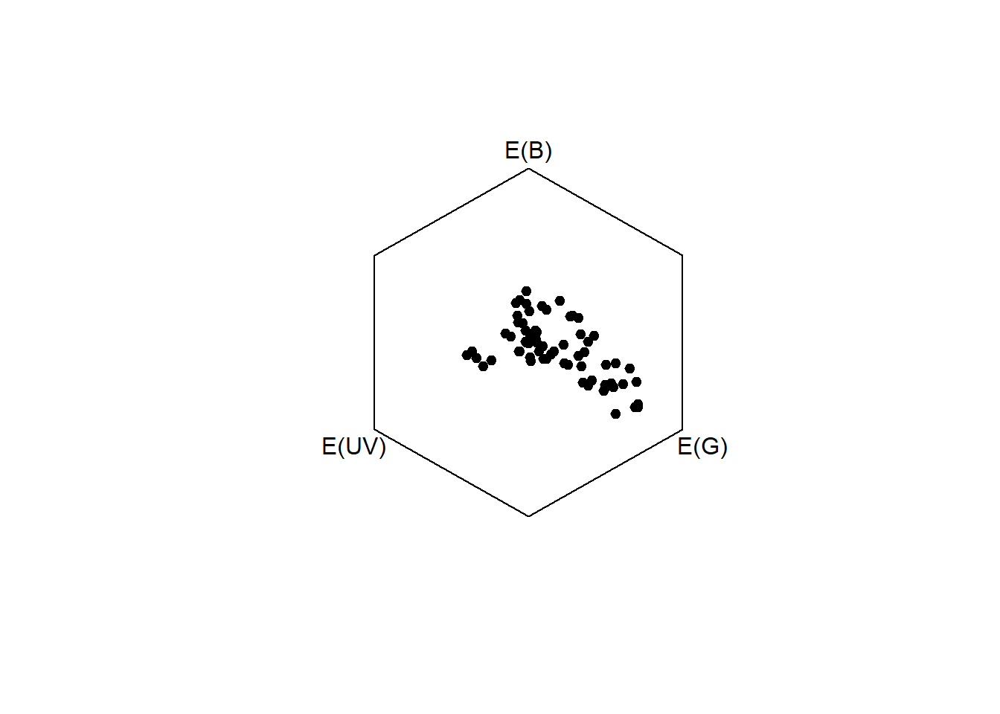
Supplementary Fig. S4/S5
# -------- distractor1 ----
spec2rgb(DisData[,c(1,2:4)])
bee_d1 <- vismodel(DisData[,c(1,2:4)], visual = "apis",
achromatic = "l", illum = "D65",
qcatch = "Ei", bkg = BkgData$GB1_10,
vonkries = T, relative = F)
hsd1 <- colspace(bee_d1, space = "hexagon")
plot(hsd1,col = c("#A0B616FF","#FFD113FF","#7CB8C4FF"),cex = 1.5)# -------- distractor2 ----
spec2rgb(DisData[,c(1,5:8)])
bee_d2 <- vismodel(DisData[,c(1,5:8)], visual = "apis",
achromatic = "l", illum = "D65",
qcatch = "Ei", bkg = BkgData$GB1_10,
vonkries = T, relative = F)
hsd2 <- colspace(bee_d2, space = "hexagon")
plot(hsd2,col = c("#8CA400FF", "#5995D7FF", "#7F97DBFF", "#A3D1E8FF"),cex = 1.5)# -------- distractor3 ----
spec2rgb(DisData[,c(1,9:11)])
bee_d3 <- vismodel(DisData[,c(1,9:11)], visual = "apis",
achromatic = "l", illum = "D65",
qcatch = "Ei", bkg = BkgData$GB1_10,
vonkries = T, relative = F)
hsd3 <- colspace(bee_d3, space = "hexagon")
plot(hsd3,cex = 1.5,col = c("#C86271FF", "#FFD600FF", "#A0AF3AFF" ))# -------- distractor4 ----
spec2rgb(DisData[,c(1,12:14)])## Warning in vismodel(rspecdata, visual = "cie10", illum = "D65", vonkries =
## TRUE, : The spectral data contain 16 negative value(s), which may produce
## unexpected results. Consider using procspec() to correct them.bee_d4 <- vismodel(DisData[,c(1,12:14)], visual = "apis",
achromatic = "l", illum = "D65",
qcatch = "Ei", bkg = BkgData$GB1_10,
vonkries = T, relative = F)## Warning in vismodel(DisData[, c(1, 12:14)], visual = "apis", achromatic = "l", :
## The spectral data contain 16 negative value(s), which may produce unexpected
## results. Consider using procspec() to correct them.hsd4 <- colspace(bee_d4, space = "hexagon")
plot(hsd4,cex = 1.5,col = c("#00A3B2FF", "#009596FF", "#6FAC87FF" ))# -------- distractor5 ----
spec2rgb(DisData[,c(1,15:17)])
bee_d5 <- vismodel(DisData[,c(1,15:17)], visual = "apis",
achromatic = "l", illum = "D65",
qcatch = "Ei", bkg = BkgData$GB1_10,
vonkries = T, relative = F)
hsd5 <- colspace(bee_d5, space = "hexagon")
plot(hsd5,cex = 1.5,col = c("#88A539FF" ,"#5BAFB9FF", "#EEBBD9FF" ))# -------- distractor6 ----
spec2rgb(DisData[,c(1,18:20)])
bee_d6 <- vismodel(DisData[,c(1,18:20)], visual = "apis",
achromatic = "l", illum = "D65",
qcatch = "Ei", bkg = BkgData$GB1_10,
vonkries = T, relative = F)
hsd6 <- colspace(bee_d6, space = "hexagon")
plot(hsd6,cex = 1.5,col = c("#FDD184FF", "#C8C8A1FF", "#D59D9AFF"))# -------- distractor7 ----
spec2rgb(DisData[,c(1,21:23)])## Warning in vismodel(rspecdata, visual = "cie10", illum = "D65", vonkries =
## TRUE, : The spectral data contain 10 negative value(s), which may produce
## unexpected results. Consider using procspec() to correct them.bee_d7 <- vismodel(DisData[,c(1,21:23)], visual = "apis",
achromatic = "l", illum = "D65",
qcatch = "Ei", bkg = BkgData$GB1_10,
vonkries = T, relative = F)## Warning in vismodel(DisData[, c(1, 21:23)], visual = "apis", achromatic = "l", :
## The spectral data contain 10 negative value(s), which may produce unexpected
## results. Consider using procspec() to correct them.hsd7 <- colspace(bee_d7, space = "hexagon")
plot(hsd7,cex = 1.5,col = c("#0062AEFF", "#777E8EFF", "#E08B9BFF" ))# -------- distractor8 ----
spec2rgb(DisData[,c(1,24:27)])
bee_d8 <- vismodel(DisData[,c(1,24:27)], visual = "apis",
achromatic = "l", illum = "D65",
qcatch = "Ei", bkg = BkgData$GB1_10,
vonkries = T, relative = F)
hsd8 <- colspace(bee_d8, space = "hexagon")
plot(hsd8,cex = 1.5,col = c("#78991BFF", "#44B6DAFF" ,
"#0081B5FF" ,"#1E78BEFF" ))# -------- distractor9 ----
spec2rgb(DisData[,c(1,28:31)])
bee_d9 <- vismodel(DisData[,c(1,28:31)], visual = "apis",
achromatic = "l", illum = "D65",
qcatch = "Ei", bkg = BkgData$GB1_10,
vonkries = T, relative = F)
hsd9 <- colspace(bee_d9, space = "hexagon")
plot(hsd9,cex = 1.5,col = c("#2069BAFF", "#77AE5CFF",
"#83B9CDFF", "#C87892FF" ))# -------- distractor10 ----
spec2rgb(DisData[,c(1,32:35)])
bee_d10 <- vismodel(DisData[,c(1,32:35)], visual = "apis",
achromatic = "l", illum = "D65",
qcatch = "Ei", bkg = BkgData$GB1_10,
vonkries = T, relative = F)
hsd10 <- colspace(bee_d10, space = "hexagon")
plot(hsd10,cex = 1.5,col = c("#FFD31BFF", "#BCB227FF" ,
"#E398A0FF" ,"#D286A3FF" ))# -------- distractor11 ----
spec2rgb(DisData[,c(1,36:40)])
bee_d11 <- vismodel(DisData[,c(1,36:40)], visual = "apis",
achromatic = "l", illum = "D65",
qcatch = "Ei", bkg = BkgData$GB1_10,
vonkries = T, relative = F)
hsd11 <- colspace(bee_d11, space = "hexagon")
plot(hsd11,cex = 1.5,col = c("#F1BF20FF", "#ECA3ABFF", "#65B3BDFF",
"#9DB8F0FF" ,"#82A320FF" ))# -------- distractor12 ----
spec2rgb(DisData[,c(1,41:44)])
bee_d12 <- vismodel(DisData[,c(1,41:44)], visual = "apis",
achromatic = "l", illum = "D65",
qcatch = "Ei", bkg = BkgData$GB1_10,
vonkries = T, relative = F)
hsd12 <- colspace(bee_d12, space = "hexagon")
plot(hsd12,cex = 1.5,col = c("#8CA5ADFF", "#0095B4FF",
"#C7AA89FF" ,"#DD83A4FF" ))# -------- distractor13 ----
spec2rgb(DisData[,c(1,45:48)])
bee_d13 <- vismodel(DisData[,c(1,45:48)], visual = "apis",
achromatic = "l", illum = "D65",
qcatch = "Ei", bkg = BkgData$GB1_10,
vonkries = T, relative = F)
hsd13 <- colspace(bee_d13, space = "hexagon")
plot(hsd13,cex = 1.5,col = c("#CE4852FF" ,"#7DA718FF" ,
"#537162FF", "#DE8F36FF" ))IriPoint3 <- aggspec(IriPoint2, by = 4, FUN = mean)## Error in is.data.frame(x): object 'IriPoint2' not foundForIrP2 <-
IriPoint3 %>%
gather (Angle, Reflectance, - wl) %>%
mutate (halfSpan = as.factor(substr(Angle, 4,5))) %>%
select (-Angle)## Error in gather(., Angle, Reflectance, -wl): object 'IriPoint3' not foundggplot (ForIrP2, aes(wl, Reflectance)) +
geom_line(aes(color=halfSpan), size=0.8) +
theme_bw() +
scale_colour_manual(values=c("#e59f16","#1973b5","#40748F"))+
theme(panel.grid.major = element_blank(),
panel.grid.minor = element_blank())+
theme(legend.position = "none") +
theme(axis.title.x = element_text(vjust=-2),
axis.title.y = element_text(vjust=+2.5))+
ylab("Reflectance (%)")+
xlab("Wavelength (nm)")## Error in ggplot(ForIrP2, aes(wl, Reflectance)): object 'ForIrP2' not foundPosition 3 as an example
ForP03 <-
IriData %>%
select (wl, contains ("P03")) %>%
gather (Pos, Reflectance, - wl) %>%
mutate (Angle = substr(Pos,5,6)) %>%
filter(Angle != "07" &
Angle != "12")
ggplot (ForP03, aes(wl, Reflectance)) +
geom_line(aes(color=Angle), size=0.8) +
theme_bw() +
scale_colour_manual(values=c("#e59f16","#1fa072","#1973b5"))+
theme(panel.grid.major = element_blank(),
panel.grid.minor = element_blank())+
theme(legend.position = "none") +
theme(axis.title.x = element_text(vjust=-2),
axis.title.y = element_text(vjust=+2.5))+
ylab("Reflectance (%)")+
xlab("Wavelength (nm)")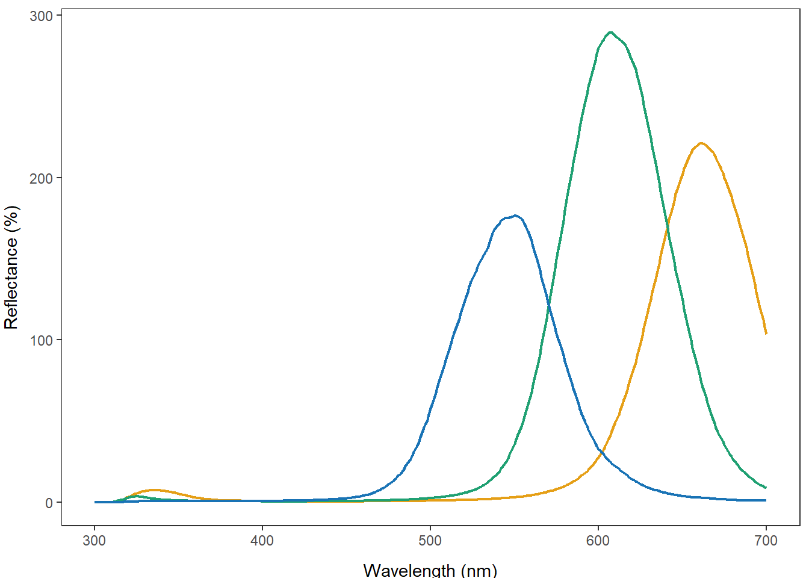
plot(BlueData[,c(1, 2)], cex = 0.7)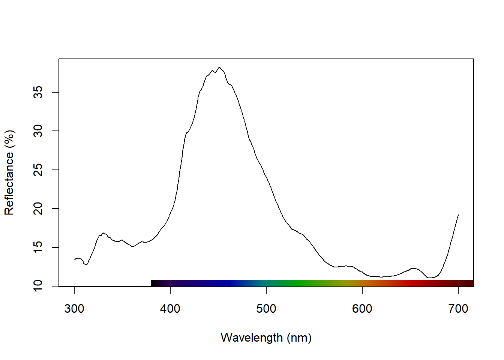